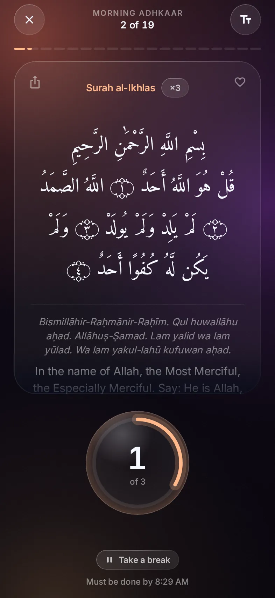

6:00 AM
Same morning.
Different ending.
Before
7:52●●●
☾
Masjid Nur · AnnouncementsAisha, Ibrahim, Musa, You and 180 others
Today
Imam YusufDon't forget your morning adhkaar today, a few minutes to start the day with Allah 🌅6:02 AM
In sha Allah, after I check a few things6:04 AM ✓✓
IbrahimDid you all see this? 😂6:21 AM
😂 send the rest6:22 AM ✓✓
MusaTraffic on the bridge already, leave early7:48 AM
A reminder in a group chat, and a promise to do it later.
With Adhkaar

The adhkaar open on your screen after Fajr, counter ready.
Free for AndroidMorning and evening adhkaar, on time.